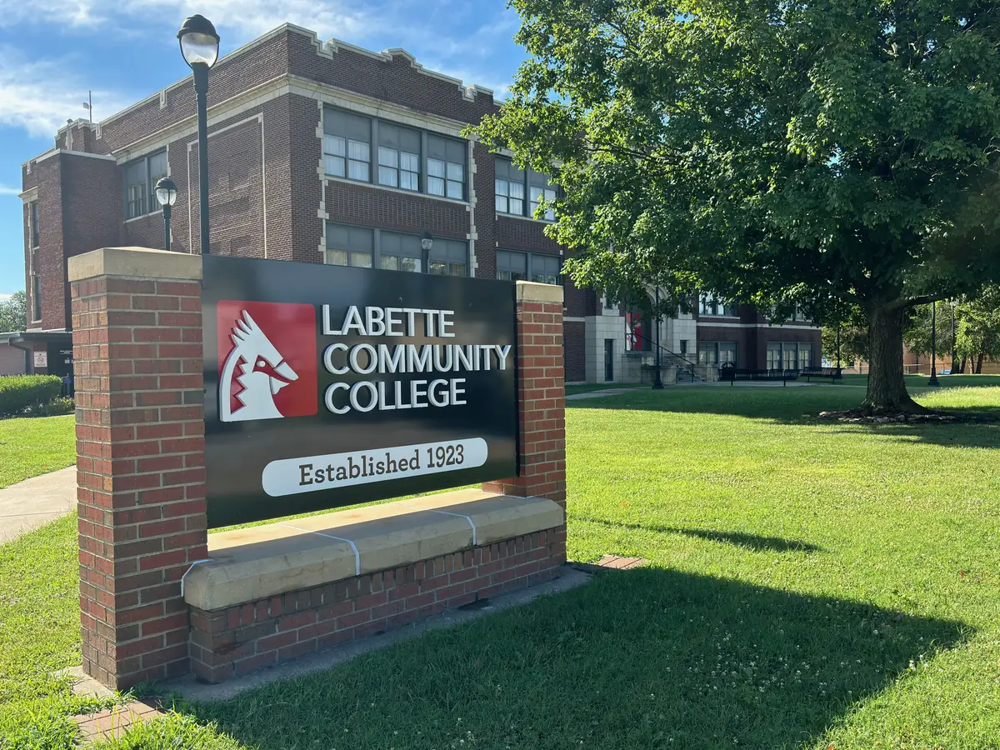

A Student's Guide to Storage in Parsons
Heading to Labette Community College? Here's how to handle your stuff between semesters.

So you're heading to Labette Community College. Welcome to the Cardinals. Whether you're making the drive down US-59, coming from one of the small towns scattered across southeast Kansas, or relocating from the other side of the state entirely, you're about to figure out something every college student eventually confronts: you own more stuff than fits in student housing, and hauling it all home every May is a terrible plan.
This guide is for LCC students who want to make their college moves smarter, cheaper, and a lot less stressful. We'll cover what to bring to Parsons, what to leave behind, why a summer storage unit beats the alternative, and how to make move-in day go as smoothly as possible. If you're a parent helping your student get settled, this one's for you too.
Moving to Parsons for College
Parsons is a different kind of college town. It's not a huge university campus surrounded by a city — it's a real Kansas community with a college that's been part of it for over a century. LCC has been educating students since 1923, and it draws them from all over: kids from Oswego, Altamont, Chetopa, and the rural towns across Labette County who are ready for a little more independence, students from Coffeyville, Chanute, and Joplin who chose the Cardinals, and folks from across Kansas and beyond who came for the athletics, the nursing program, or the technical training.
No matter where you're coming from, the logistics of moving are roughly the same. You'll pack up your car (or your parents' truck), drive to Parsons, and try to squeeze your life into a space that's significantly smaller than your bedroom at home. The trick is figuring out what actually comes with you — and what doesn't.
What to Bring to Campus
Whether you're moving into student housing or an off-campus apartment, start with the essentials and add from there. Here's what most LCC students actually use day to day:
- Bedding and towels. Check what size mattress your housing has before you buy sheets. Bring two sets so you're not doing laundry every week.
- Laptop and school supplies. This is college — your laptop is your most important tool. A good backpack, notebooks, and whatever else your program requires.
- Current-season clothing. If you're moving in August, bring summer and early fall clothes. Leave the heavy winter coats at home for now and swap them out when you visit over fall break.
- Important documents. ID, insurance cards, car registration, any financial aid paperwork. Keep these in one folder.
- Kitchen basics (for apartments). If you're in an apartment, bring a few pots, a skillet, plates, cups, and utensils. You don't need a full kitchen setup — just enough to cook basic meals and save money instead of eating out every night.
- A fan and a power strip. Southeast Kansas runs hot and humid in August and September. A good fan makes a real difference. And you'll never have enough outlets.
What to Leave at Home
This is where most students go wrong. They pack everything they own, arrive in Parsons, and realize half of it has no place to go. Save yourself the hassle:
- Off-season clothes. You don't need winter boots and a parka in August. Leave them at home and grab them at Thanksgiving or winter break.
- Furniture you don't need yet. Student housing comes furnished. If you're in an apartment, check what's included before buying a couch or a desk. Many Parsons rentals come with the basics.
- Duplicate kitchen items. If you're sharing a place with a roommate, coordinate. You don't need two toasters, two coffee makers, and two sets of pots. One of each is plenty.
- Sentimental items you'll worry about. That guitar your grandpa gave you, your childhood card collection, anything irreplaceable — leave it somewhere safe at home until you have a stable living situation.
- Your entire book collection. You'll accumulate enough textbooks. Bring a few favorites and leave the rest.
Why Store in Parsons Instead of Hauling Everything Home
Here's the scenario that plays out every May. The semester ends, your lease is up (or you're moving out of student housing), and you've got a car full of stuff and nowhere to put it. You could load up a truck, drive an hour or two to wherever home is, unload everything into your parents' garage, and then do the whole thing in reverse come August.
Or you could rent a storage unit in Parsons for three months and skip all of that.
Think about it this way:
- You'll be back in the fall. If you're returning to LCC for another semester — or staying in Parsons for a summer job — your stuff is already here. Move-in takes an hour instead of a full day.
- Two full moves vs. one storage unit. Loading a truck, driving home, unloading, and then doing it all again in August is exhausting. A storage unit lets you move once: from your room to the unit in May, and from the unit to your new place in August.
- The lease gap problem. Most student leases run through May or July. If yours ends in May and your next one starts in August, where does your stuff go for those three months? Storage solves that gap cleanly.
- Storage is cheap. Our 10x10 units — big enough for one student's belongings with room to spare, or two students' stuff split down the middle — run $75 a month. Three months of summer storage is a fraction of what you'd spend on gas, a rental truck, and the time it takes to make two round trips.
The Math: Storage vs. Moving Twice
Let's break it down. Say you're from a couple hours away up US-59 or over in the Wichita area. Moving home in May and back in August means:
- Renting a small trailer or borrowing a truck — twice
- Gas for two round trips
- A full day of loading and unloading — twice
- Convincing your friends or family to help — twice
- Wear and tear on your car, your back, and your patience
Now compare that to a 10x10 storage unit for the three summer months — $225 total, or about $112 each if you split it with a roommate. You load it once in May, close the door, and come back in August when your new place is ready. And if you're coming from farther away, the savings are even bigger because you're cutting out hours of driving each way.
The Apartment Transition: Student Housing to Off-Campus Living
Plenty of LCC students start out in student housing and move to an off-campus apartment after the first year. It's a natural progression, and it comes with a new set of logistics. Suddenly you need furniture, kitchen supplies, and all the things housing provided for you.
Here's where storage gets really useful. As you accumulate apartment essentials — a couch you found on Facebook Marketplace, a desk from a graduating student, kitchen gear from your parents — you need somewhere to keep it all if your current lease ends before the next one starts. A storage unit bridges that gap perfectly. You don't have to turn down a great deal on a futon just because you don't have room for it right now.
The annual cycle for off-campus students usually looks like this: move into your apartment in August, live there through May or July, move everything into storage for the gap, and move into your next place when it's ready. A storage unit right here on US-59 makes that cycle painless — no long drives, no complicated logistics.
Split a Unit With Your Roommate
Here's a tip that saves Cardinals real money: split a storage unit with your roommate. A 10x10 unit holds two students' worth of furniture, boxes, and belongings comfortably — two bed frames and mattresses, two desks, a small couch, and 20 or more boxes stacked along the walls. Split the $75 down the middle and you're each paying about $37.50 a month for the entire summer.
The key to making this work is organization. Each person claims a side of the unit. Label your boxes clearly. Take a photo of the loaded unit so you remember where everything is. And if you've got more furniture between you — say two full apartment setups — step up to a 10x15 and you'll still barely notice the cost split two ways.
Why Labette County Storage Works for Students
Our facility fits exactly this kind of use. Here's what makes Labette County Storage a good match for LCC students:
- Easy to reach. We're at 1830 S US-59, a quick drive from campus and easy to find even if you just got to town — straight down the highway, no complicated directions.
- Drive-up access. Every unit has a roll-up door you can pull your car right up to. No elevators, no hallways, no hauling boxes across a parking lot. Back up your car, open the door, and start loading.
- Month-to-month leases. No long-term contracts. Rent for May, June, and July, then give us 10 days' notice and move out when you're back in August. You only pay for what you use.
- Free lock included. Every new tenant gets a disc lock at no extra charge. One less thing to buy during an already expensive time of year.
- Fenced and gated. The whole facility sits behind a perimeter fence with electronic gate access. Your code gets you in from 6am to 10pm, seven days a week — early morning loads and after-class runs both work fine.
- 24/7 cameras + lit grounds. Security cameras cover every entry point and unit row, recording around the clock, so your stuff is protected all summer while you're away. Check our security page for details.
- 10% military discount. Labette County Storage is veteran-owned, and we offer a 10% discount to active duty military, veterans, and their families. If you're a veteran student at LCC using your GI Bill or military benefits, ask about the discount when you reserve — it applies to any unit size.
Move-In Day Tips for Students
Whether you're moving into your storage unit or into your new place, a little planning goes a long way. Here's how to make it smooth:
- Reserve before move-in weekend. The weeks around the start of the fall semester are the busiest time for local storage, and May move-out is a close second. Don't wait until the last minute — call us at (620) 778-8196 or reserve online a few weeks early to lock in your unit.
- Load your car strategically. Put the things you'll need first (bedding, toiletries, laptop) on top or in the back seat where you can grab them. Heavy boxes and furniture go in first, light stuff on top.
- Bring a handcart or dolly. If you don't own one, borrow one. It makes moving boxes and furniture from your car to your unit ten times easier, especially in the August heat. A cheap folding hand truck pays for itself on day one.
- Take a photo of your loaded unit. Before you close the door for the summer, snap a picture with your phone. When you come back in August, you'll know exactly where everything is. This is especially helpful if you're splitting a unit with a roommate.
- Set up auto-pay. Don't worry about remembering your storage bill while you're home for the summer or busy with classes. Set up automatic payments when you sign your lease and forget about it until you're ready to move out.
Welcome to Parsons, Cardinals
Moving to a new town for college is a big deal, and the logistics of getting your stuff where it needs to be shouldn't add unnecessary stress. Whether you're moving into student housing for the first time, transitioning to an off-campus apartment, or a returning student who knows the drill, having a storage plan makes the whole process easier.
Parsons is a great place to go to school. The community supports LCC, the cost of living is genuinely affordable, and campus puts you within reach of everything from Forest Park to the shops and restaurants of downtown. Your stuff should be the least of your worries.
If you have questions about which unit size works best for a student, want to coordinate a shared unit with your roommate, or just need advice on how to pack efficiently, give us a call at (620) 778-8196. Labette County Storage is at 1830 S US-59, a few minutes from campus, and we're happy to help Cardinals get settled. Check out our size guide to see which unit fits your needs, or visit our FAQ page for more answers.
Frequently Asked Questions About Student Storage
How much does summer storage cost for a college student?
Our 10x10 unit — plenty of space for one student's furniture, boxes, and belongings — is $75 a month. Renting for the three summer months costs $225 total, less than you'd spend on gas and a rental truck to move everything home and back. Leases are month-to-month, so you only pay for the time you actually use.
Can two students share one storage unit?
Absolutely. A 10x10 comfortably fits two students' worth of stuff — two bed frames, two desks, a small couch, and plenty of boxes — and splitting it means you're each paying about $37.50 a month. If you've got two full apartment setups between you, a 10x15 gives you breathing room for a few dollars more each.
Can I get to my unit outside business hours?
Yes — the electronic gate accepts your personal code from 6am to 10pm, seven days a week, so early loads and evening runs around your class schedule are no problem. The facility is fenced, gated, and covered by 24/7 security cameras. If you need extended access, give us a call and we'll work it out.
Do you offer a military discount for veteran students?
Yes. Labette County Storage is veteran-owned, and we offer a 10% military discount to active duty, veterans, and military families. If you're attending LCC on the GI Bill or other military education benefits, just mention it when you reserve your unit. The discount applies to any size.
When should I reserve a unit for the summer?
We recommend reserving at least two to three weeks before the end of the spring semester. The May move-out rush is a busy time for student rentals, and with 10x10 units in high demand, popular sizes can fill up. Call us at (620) 778-8196 or reserve online to lock in your unit early.
More from the Blog

Moving to Parsons? Here's What You Need to Know
A local's guide to neighborhoods, costs, and getting settled in Labette County.

Why Self Storage Makes Moving Easier
A storage unit can take the stress out of your move. Here's how.

How to Choose the Right Storage Unit Size
From small closets to large garage-sized units, here's how to pick the perfect fit.